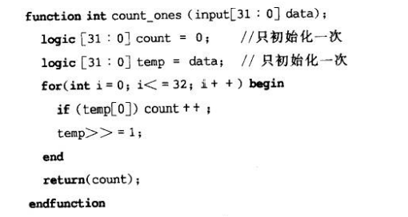
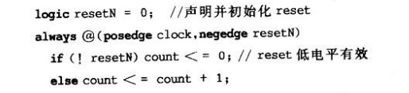

SystemVerilog_数据类型
本文最后更新于：2024年5月8日 上午
- 参考
1. 增强的 文本值赋值
在Verilog中，可以很轻松的为变量赋值0、X、Z，但是很难实现直接为每1bit赋值为1.
1
2
3
4
5//例如在verilog 中，可以通过以下三种方式，为每1bit赋值为1.
wire [63:0] data;
assign data = 64'hFFFF_FFFF_FFFF_FFFF;
assign data = ~0;
assign data = -1;SystemVerilog 增强了文本值赋值功能，举例如下。
1
2
3assign data = 'b1; //将data所有的bit位都设置为1
// 与此相同的有
'b0/'bx/'bz
2. `define 增强
2.1 字符串内的宏变量替换
在Verilog中，`define 宏中可以使用双引号 ” “，但是双引号内的文本就变成了字符串，没有意义。
举例如下，其中%h并不会被换成data的值，%h仅作为一个字符串。
1
2
3
4`define print(v)\
$display("variable v=%h",v);
`print(data);- 注意，对于多行宏，需要在行后添加，如果没有该，则认为该行为宏中最后一行
SystemVerilog 可以进行宏文本字符串中的变量替换，需要在双引号前添加 ` ，这样字符串内的%h会被正确解释为格式变量。
1
2
3
4`define print(v)\
$display(`"variable v=%h`",v)
`print(data);如果字符串中有需要加”“的，Verilog中会使用转义符：，如下。
1
$display("variable \"v\"=%h",v); //打印出：variable "v" = 5那么在System Verilog 的宏文本字符串变量替换中，需要更改如下。
1
2
3
4`define print(v)\
$display(`"variable `\`"v`\`"=%h`",v)
`print(data);
2.2 通过宏建立标识符名
在Verilog中，不可能通过连接两个或多个文本宏来建立一个新的标识符。
System Verilog 中可以使用两个连续的`来将多个文本宏连接在一起，形成一个新的名字。
举例如下。
1
2
3
4
5
6
7
8
9
10
11
12
13
14
15
16
17
18
19
20
21
22
23
24
25
26
27
28//(1)
`define append_front_2a(MOD) `"MOD.master`"
$display(`append_front_2a(clock2a));
//clock2a.master
//(2)
`define append_front_2b(MOD) `"MOD master`"
$display(`append_front_2b(clock2b));
//clock2b master
//(3)
`define append_front_2c_bad(MOD) `"MOD_master`"
$display(`append_front_2c_bad(clock2c));
//MOD_master
//(4)
`define append_front_2c_good(MOD) `"MOD``_master`"
$display(`append_front_2c_good(clock2c));
//clock2c_master
//(5)
`define append_front_3(MOD) `"MOD``.master`"
$display(`append_front_3(clock3));
//clock3.master
//(6)
`define append_middle(MOD) `"top_``MOD``_master`"
$display(`append_middle(clock4));
//top_clock4_master
//(7)
`define append_end(MOD) `"top_``MOD`"
$display(`append_end(clock5));
//top_clock5
3. SystemVerilog 变量
3.1 SystemVerilog 数据类型
- Verilog 数据类型主要有变量类型和线网类型。
- 变量类型：reg、integer、time 变量，每一位都有四种逻辑：0、1、x、z.
- 线网类型：wire、wor、wand等。
- SystemVerilog 数据类型
- 变量类型，其使用所有Verilog变量类型，同时还增加了一些其它变量类型，如：byte和int。
- 线网类型：相较于Verilog的线网类型，没有任何扩展。
- SystemVerilog-2005 标准中，变量类型可以是两态的，也可以是四态的。而线网只能是四态的。
3.2 SystemVerilog 四态变量
logic 与 reg/wire
logic除了作为一个变量以外，还可以被连续赋值、门单元和模块所驱动。
logic类型只能有一个驱动，在单驱动情况下，可以替换掉reg/wire。对于多驱动，如双向端口，需要使用wire来定义。
另外，在wire定义时赋值是连续赋值；而在logic定义时赋值是赋初值，且赋初值是不能综合的。
1
2
3
4wire mysignal0 = A & B; // continuous assignment, AND gate
logic mysignal1 = A & B; // not synthesizable, initializes mysignal1 to the value of A & B at time 0 and then makes no further changes to it.
logic mysignal2;
assign mysignal2 = A & B; // Continuous assignment, AND gate
关键字logic 并不是变量类型，其是一种数据类型，表示信号具有四态值。
Verilog 线网类型缺省为四态logic数据类型，也可以用logic关键字来显示声明。
1
wire logic [63:0] addr;
当logic关键字单独使用时，则暗示这是一个变量，相当于：
1
var logic [63:0] addr;
3.3 SystemVerilog 两态变量
SystemVerilog 新增了几个两态变量，包括：
- bit：1bit整数。
- byte：8bit整数。
- shortint：16bit整数。
- int：32bit整数。
- longint：64bit整数。
在可综合的RTL硬件模型中，更愿意用四态类型。
- Z态用于表示未连接或三态逻辑。
- X态用于检测设计错误。
- 而在更高级的建模中，几乎用不到X和Z态，因此可用两态变量。
SystemVerilog中允许变量声明为bit数据类型。
关键字bit与logic一样，并不是变量类型，是一种数据类型，区别在于其是两态值。
当bit关键字单独使用时，则暗示这是一个变量，相当于：
1
var bit [63:0] addr;
使用类似C语言的变量类型
如 int 和 byte，在使用DPI（直接编程接口）：Verilog模型到C/C++接口，使用两种语言表示方法相同的数据类型，便于数据交互。
int 还可用作for循环中的控制变量。
- 在可综合的RTL模型中，循环控制变量只是一个临时变量，不需要四态值，因此无论是抽象模型还是可综合的RTL模型中，都可以使用int作为for循环的控制变量。
仿真初始值
- 四态变量
- 仿真器认为变量所有bit均为逻辑X，直到赋值给变量（如复位逻辑），数据才会有值。
- 四态变量也可以通过内嵌初始化定义开始仿真的值，但这是不可综合的。
- 两态变量
- 仿真器认为数据是从逻辑0开始的。
- 由于两态变量不存储X态，因此他们不能描述未初始化状态。
- 四态变量
给一个两态变量赋值四态变量是合法的，X态和Z态都会转化成逻辑0.
其它抽象类型
- System Verilog增加了void类型表示无存储，可用于标签联合体以及用于定义无返回值的函数。
- System Verilog还定义了与Verilog中real类似的shortreal，其中real是64bit的双精度浮点数，而shortreal是32bit的单精度浮点数。
3.4 显示及隐式 变量和线网类型
当四态或两态数据类型没有显式指定数据类型是变量还是线网类型时，会推断其为隐式变量。
System Verilog允许在任何数据前使用var关键字，显式表示对象是一个变量。
var关键字并不影响变量的仿真和综合行为。
该显示描述方式可以用在用户自定义类型的变量上。
1
2typedef enum bit {FALSE, TRUE} bool_t;
var bool_t c;还可以直接使用var关键字声明变量，不指定数据类型，此时默认变量为logic数据类型。
1
var [7:0] d;
所有的Verilog线网类型都是四态逻辑数据类型。
线网可以使用线网类型和logic数据类型进行声明。
1
wire logic [31:0] busB;
3.5 有符号和无符号修饰符
IEEE Verilog-2001 中允许将任何数据类型声明为有符号数，缺省数据类型为无符号数。
System Verilog增加了缺省为有符号数的数据类型。
包括byte、shortint、int、longint。
需要使用关键字unsigned来将这些数据定义为无符号。
1
2int s_int; //有符号32位变量
int unsigned u_int; //无符号32位变量
System Verilog 中的符号声明与C语言不同。
C语言中，signed/unsigned关键字可以在数据类型关键字前面/后面指定。
Verilog中，signed关键字只能在数据类型后面声明（没有unsigned关键字）。
System Verilog中，只允许在数据类型后面声明关键字 signed或unsigned。
1
2
3
4
5//合法的C语言声明
unsigned int u1;
int unsigned u2;
/Verilog 声明
reg signed [31:0] s;
4. 静态和自动变量
4.1 动态变量
可以定义一个任务或函数中的变量是动态的，即变量的存储区在需要时由软件工具动态地分配，在不需要的时候被释放。
其主要用作测试程序、抽象系统级、总线功能模型中的验证程序。举例如下：
测试函数被设置为动态函数，这样可以在任务上一个调用还在运行时，再调用该任务。
其中用于统计错误次数的变量error_count被设置为静态函数。
- 如果error_count设置为动态变量，那么每次调用都会被重新创建，无法保存之前统计的值。
1
2
3
4
5
6
7
8
9typedef struct packed {...} packet_t;
task automatic check_results
(input packet_t sent,recieved);
output int total_errors);
static int error_count;
...
if(sent!==recieved)error_count++;
total errors=error_count;
endtask
自动变量也允许编写递归函数（函数调用其自身）。
含有自动变量的任务或函数，每次调用，都会建立新的变量存储空间，当访问结束后，空间会被释放掉。
举例如下，其中变量lo和hi，以及函数内部变量mid都是动态变量，因此每次递归调用都会分配新的变量。
1
2
3
4
5
6
7function automatic int b_add(int lo,hi);
int mid = (lo+hi+1)>>1;
if(lo+1!=hi)
return (b_add(lo,(mid-1))+b_add(mid,hi));
else
return (array[lo] + array[hi]);
endfunction
在Verilog中，通过声明整个任务/函数是动态的，来表明内部变量是动态的。
在System Verilog中，增加了声明静态变量和动态变量的能力。
- 可以通过static和automatic分别声明变量为静态和动态。
- 注意静态/动态显式声明需要在任务/函数/begin...end块/fork...join块中。
- 不能出现在module的一级声明中，在模块级，所有的变量都是静态的。
在System Verilog中，在未显式声明动态 函数/任务 情况下，所有的存储方式都缺省为静态的。
- 如果在显式声明动态 函数/任务下，所有变量默认为动态的，除非使用关键字static显示声明。
4.2 静态变量和自动变量的初始化
- Verilog 只允许在模块module级，对变量进行初始化。
- 不允许在任务/函数/begin...end/fork...join中声明变量不可以进行初始化。
- 可重入函数 & 不可重入函数
- 可重入函数是指能够被多个线程“同时”调用的函数，并且能保证函数结果正确不必担心数据错误的函数.
- 不可重入函数是指不能运行在多任务环境下，除非能保证互斥的函数。
4.2.1 System Verilog初始化
对Verilog进行扩展，在任务、函数中也可以内嵌初始值。
在非动态任务和函数中声明的变量默认是静态的。
- 初始值会在仿真开始时进行一次赋值，之后对任务/函数的再次调用不会重新初始化变量。
- 在任务/函数中初始化静态变量是不可综合的。
静态变量初始化规则：举例如下
当函数第一次被调用时，变量count的初始值为0，在下次调用时，不会再进行初始化。
变量temp在函数第一次调用时，初始值被设置为0，而不是data的值。
- 因为初始化是发生在仿真开始前，而不是函数调用时。

动态变量初始化规则
- 任务和函数中的动态变量，每次任务和函数调用时都会被动态创建，调用完毕会被动态的释放。
- 如果将上面代码中的count和temp声明为动态变量，那么在每次函数被调用时，都会进行一次初始化。
动态变量是可以综合的，但需要动态变量只用于暂时存储，不会传送到任务/函数/过程块的外部。
4.2.2 静态和动态变量的使用原则
- 在always和initial块中，如果没有需要初始化的可以使用静态变量；如果需要初始化，则可以使用动态变量。
- 如果一个任务/函数是用来描述独立的硬件电路，并且是不可重入的，那么应该将它声明为静态的，其内部变量也应该是静态的。
- 如果一个任务/函数是可重入的，那么应该设置为动态的，其内部变量也应该是动态的。
- 除非有特殊需求，需要在两次调用之间保持变量的值。
4.3 变量初始化的确定性
4.3.1 初始化确定机制
在Verilog-2001标准中，允许在变量声明时直接对其进行初始化。
但在标准中指出，变量的初始化与在仿真0时刻执行的initial块和always块中的初始化顺序一样，都是不确定的。
举例如下：i和j谁先被赋值是不确定的，因此j可能是X态。
1
2
3integer i=5;
integer j;
initial j=i;
在System Verilog中，规定了所有变量初始化优先于仿真时刻0执行的事件。
举例如下
 - 对于Verilog，可能发送两种情况：
- （1）在初始化resetN之前，先激活了always块，仍然在仿真0时刻，初始化resetN，因此resetN存在一个X到0的跳变。always块采样到该跳变，于是执行了count的初始化。
- （2）在激活了always块之前，首先对resetN进行初始化，仍在仿真0时刻，激活always块，但无法采样到negedge resetN，需要等待下一个clk的上升沿或下一个resetN的negedge。
- 对于System Verilog，消除了不确定性，保证只有上面的（2）会发生。
- 对于Verilog，可能发送两种情况：
4.3.2 时序逻辑的异步输入初始化
在tb编写测试激励时，可能出现下面情况：
1
2
3
4
5bit resetN = 1; //resetN是异步复位检测 negedge resetN
initial begin
resetN = 0;
#2 resetN = 1;
end- 由于resetN为bit数据类型，因此若没有初始化为1，其在仿真开始时会被初始化为0.
- 对于Verilog，可能出现以下两种情况
- （1）initial块先于变量初始化，即resetN 先0后1，不符合测试要求。
- （2）变量初始化先于initial块，即resetN 先1后0，符合测试要求。
- 对于System Verilog，必定是情况（2）。
4.4 强制类型转换
- System Verilog加入了强制数据类型转换，其主要包括静态转换和动态转换。
4.4.1 静态转换（编译时转换）
- 其格式为：
<type>'(<expression>)，将一个值强制转换为任何数据类型，包括用户自定义类型。举例如下:
1
7+int'(2.0*3.0)
- 可以将值强制转换为任意向量长度，格式为：
<size>'(<expression>)举例如下，将文本值2转为16bit位宽。
1
y=a+b**16'(2)
- 可以将值强制转换为有符号/无符号数，其格式为：
<signed/unsigned>'(<expression>)举例如下：
1
y=y-signed'({a,b});
- 因为静态转换是在编译时进行的转换，总是会进行的。但不会检查要转换的表达式是否在转换后是合法的，因此在转换前需要确定。
4.4.2 动态强制类型转换
System Verilog提供一个新的系统函数
$cast，是动态的，在运行时会检查转换值的正确性。$cast 包含两个变量，目标变量和源变量。
1
$cast(dest_var,source_exp);$cast 将源变量转化为目标变量数据类型，如果赋值是无效的（非法的），将会报告出错误，并且源变量保持不变。
以下几种情况都会导致无效的强制类型转换。
- real 转 int。
- 将数值转为枚举类型，但转化后不在枚举合法值列表中。
如果转换成功，$cast会返回1，如果转换不成功，会返回0.举例如下。
1
2status=$cast(next_state,state+1);
if(status == 0) next_state = s1;
$cast不可以和直接修改源表达式的操作符一起使用。如：++/+=。
静态转换是可综合的，但动态$cast系统函数是不可综合的。
- 一般来说，系统任务和系统函数不是一种可综合的结构。
5. 常数
在Verilog中，提供三种类型的常数：
- parameter：可以使用defparam以及例化参数传递进行重定义。
- specparam：不可以赋值给parameter，不能通过参数传递进行修改；唯一的修改方式是通过SDF反标修改。
- localparam：不可以重定义，但是他可以基于其它常数，进行修改。
Verilog限制三个常数只能在模块、静态任务和静态函数中声明，在动态函数/任务以及always块、initial块中声明是违法的。
System Verilog新增了将任何变量声明为常数的能力，使用const关键字。
const常数声明必须包含数据类型。
const主要为了保证值不被错误的代码改变。
const可以在动态任务和函数中声明。也可以在模块级、静态任务和函数中声明。
1
const real C1 = 3.14;